01 / Overview
What this study asks
Patch foraging is a sequential decision problem: stay in the current resource patch to exploit it, or leave and accept travel time in exchange for future opportunities. Classical foraging theory formalizes patch-leaving decisions in terms of long-run intake rate. More recent model-based approaches show why temporal structure—such as gradual resource replenishment and the state of unattended patches—can make richer environmental models useful.
This project asks a narrower question: with the action set held fixed at exploit and leave, does an explicit representation of the ongoing ecological situation improve average reward per unit time? We introduce a stochastic threat-and-recovery process whose transitions are independent of immediate food reward outcomes. In this constructed task, the ecological phase changes the cost of exploiting and the likelihood that leaving ends a threat.
Headline result in this implementation
Across all four predefined scenarios, the event-aware policy has the highest simulated mean reward rate. Its mean advantage over the event-blind policy ranges from +0.042 to +0.058 reward units per unit time; its advantage over the Zeraati-style event-free policy ranges from +0.066 to +0.083. The advantage is consistent within this simulation, but it is not yet evidence that explicit event inference is generally necessary: the event-aware model has oracle access to the phase label, and the comparison models use approximate state aggregation.
The simulation tests the value of representing the current situation in a state supplied to an optimal planner. It does not yet test whether an agent can learn to perceive event boundaries, whether such boundaries are biologically implemented, or whether a sufficiently expressive recurrent/belief-state agent could recover the same information.
02 / Theoretical background
From reward-rate rules to situation-sensitive control
Marginal Value Theorem and patch leaving
In its classical form, the Marginal Value Theorem (MVT) predicts leaving a depleting patch when the marginal return from staying falls below the average return available in the environment, under the assumptions of the model. It explains patch leaving as a rate-maximization problem. However, real or richer simulated environments can violate simplifying assumptions—such as immediate replenishment of abandoned patches—and make the state of other resources and their future dynamics relevant. See Stephens & Krebs (1986), Kendall & Wikenheiser (2022), and Zeraati et al. (2025).
Stephens & Krebs · Foraging Theory ↗ · Kendall & Wikenheiser (2022) ↗Average-reward model-based reinforcement learning
Zeraati et al. (2025) formulate a three-patch sequential foraging problem as an average-reward MDP. Their actions are exploit and leave; their state includes the current patch and reward probabilities across patches. They solve the known-model optimization problem using policy iteration on an average-reward Bellman equation. Their contribution relevant here is that patch replenishment timescales can make the world model matter beyond a single average reward threshold. The current project borrows the two-action structure and average-reward optimization framework, but adds a latent threat/recovery process and discretized resources.
Read Zeraati et al. (2025) ↗Event perception and situation-model updating
Event Segmentation Theory proposes that observers predict near-future states and update event models when meaningful prediction errors indicate that the current activity has changed. Event boundaries can organize perception, attention, and memory; segmentation can occur hierarchically and can depend on both perceptual cues and knowledge about goals. This motivates the present computational question: might an explicit event signal help a controller identify which ecological situation it is in, even when immediate reward has not changed? This is a motivating hypothesis, not something established by the current simulation.
Zacks et al. (2007), Psychological Bulletin ↗ · Zacks & Swallow (2007) ↗Why use long-run reward per unit time?
The environmental actions have different durations: exploiting takes 1.00 time unit and leaving takes 1.25. A policy that receives more rewards per decision is not necessarily the policy that obtains more reward per unit time. Average-reward objectives account for the opportunity cost of time and are naturally aligned with continuous foraging decisions. The theoretical solver is model-based: transition probabilities, expected rewards, and action durations are given to the algorithm rather than learned from raw experience.
Mahadevan (1996), average-reward RL ↗ · Sutton & Barto (2018) ↗03 / Research questions
Hypotheses and what would count as evidence
The event-aware MDP should achieve a higher mean reward rate than event-blind PI when the task's reward consequences and transition dynamics depend on an ongoing ecological phase.
With the same two actions and average-reward objective, explicit phase-state access should improve reward rate relative to an event-free state map adapted from the baseline logic in Zeraati et al. (2025).
The event representation may be most useful in regimes where threat is common or resource replenishment is slow. This requires a systematic sensitivity analysis and out-of-distribution evaluation beyond the four conditions tested here.
A difference in reward demonstrates that the added phase information is useful in this specified environment. It does not show that an event-aware agent is the only model capable of representing the task. A recurrent world model, Bayesian filter, or sufficiently rich history-dependent policy may infer the same latent phase without an explicit event label.
04 / Environment and state map
A two-action patch-foraging task with independent event dynamics
The environment has three patches in a fixed cycle A → B → C → A. The same two actions are available to every agent. Resource levels are discretized into three categories (depleted, intermediate, rich). A stochastic ecological phase evolves alongside the resource process.
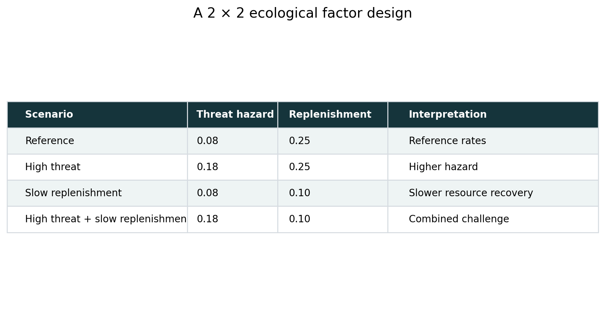
Actions and time costs
| Action | Effect | Duration | Immediate reward |
|---|---|---|---|
| Exploit | Attempts to collect food at the current patch; can deplete that patch while unattended patches replenish. | 1.00 | 0 or 1 food reward, minus phase-dependent risk cost. |
| Leave | Moves to the next patch in the fixed A→B→C→A cycle; all eligible patches may replenish. | 1.25 | 0 immediate reward. |
Resource and food-reward dynamics
Each patch has a maximum food probability: pmax = [0.7, 1.0, 0.3] for A, B and C. Resource level multipliers are [0.18, 0.55, 1.0] for depleted, intermediate and rich. If the current patch is i and resources are r, then
During exploitation, a successful reward triggers a resource drop with probability 0.72, compared with 0.12 after a failed attempt, provided the patch is not already depleted. Other patches can replenish. During leaving, all patches below maximum level can replenish. For a replenishment parameter q over action duration Δt, the duration-adjusted probability is 1 − (1 − q)Δt.
Ecological-situation process
Ordinary foraging. A threat can begin with duration-adjusted hazard probability.
Boundary phase. Leaving makes transition toward recovery more likely than exploiting.
Threat remains active; leaving has a higher release probability than exploiting.
One-step transition marker indicating that the threat has begun to resolve.
Returns toward ordinary foraging; a new threat can occur according to the scenario hazard parameter.
Threat onset is sampled independently of the immediate food outcome. This is a task-design decision to separate ecological change from reward change. In threat-onset and ongoing-threat phases, exploitation receives an illustrative cost of 0.85; in recovery-onset and recovery phases it receives a cost of 0.06. The task values are hand-set assumptions for a proof of concept—not empirical estimates of an animal's risk sensitivity.
State-space architecture
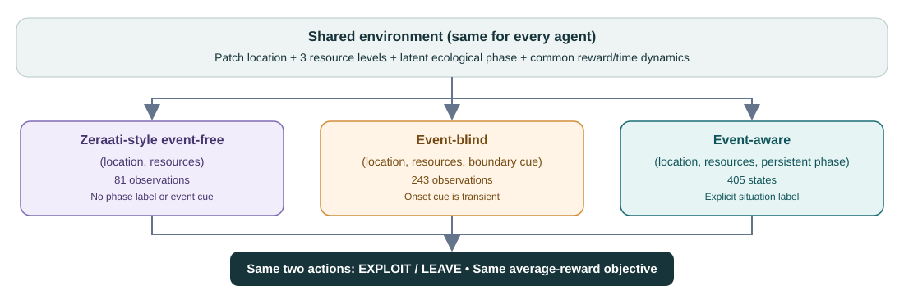
| Model | State/observation tuple | Count | Available event information |
|---|---|---|---|
| Event-aware PI | (location, rA, rB, rC, phase) | 3 × 3³ × 5 = 405 | Persistent ecological phase, including ongoing threat and recovery. |
| Event-blind PI | (location, rA, rB, rC, cue) | 3 × 3³ × 3 = 243 | Transient cue: +1 threat onset, −1 recovery onset, 0 otherwise. |
| Zeraati-style event-free PI | (location, rA, rB, rC) | 3 × 3³ = 81 | No explicit phase label and no transient boundary cue. |
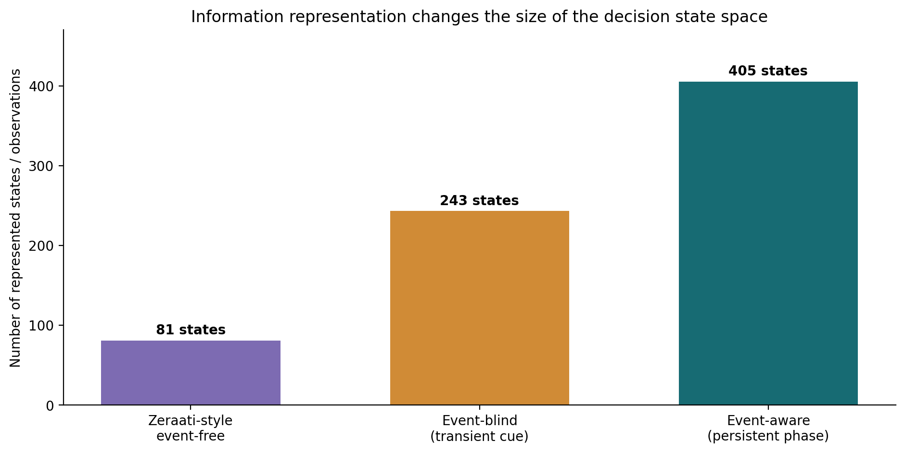
05 / Model comparison
Five policies, one action set
| Model | Policy construction | Information retained | Role in the comparison |
|---|---|---|---|
| Event-aware PI | Policy iteration on full 405-state MDP. | Persistent true phase label. | Tests value of explicit situation state under oracle event-state access. |
| Event-blind PI | Policy iteration on 243 observation states. | Current location/resources plus transient onset cue. | Tests whether retaining the ongoing phase adds value beyond a transient boundary cue. |
| Zeraati-style event-free PI | Policy iteration on 81 observation states. | Location/resources only. | Event-free, same-action adapted benchmark for the current environment. |
| MVT-inspired threshold | Threshold rule; not policy iteration. | Current patch food probability; threshold set from event-free PI average reward estimate and clipped to [0.05, 0.80]. | Simple reward-rate heuristic, not an exact original MVT implementation. |
| Best fixed threshold | Threshold selected from a grid on separate training seeds. | Current patch food probability and one fixed threshold per scenario. | Stronger rule-based baseline that controls for an arbitrary threshold choice. |
How the partial-observation baselines are built
The event-blind and event-free transition models are generated by aggregating latent states that map to the same observation. Compatible latent phases are mixed using a scenario-specific stationary phase prior computed under a neutral 50:50 exploit/leave action mixture. This produces aggregate transition, reward and duration models.
This approximation is important. Hidden phase influences rewards and transition probabilities; aggregating it away does not in general produce an exactly Markov process. The priors are not inferred online, and they are not conditioned on the final policy. Thus the event-blind and event-free solvers optimize approximate observation-level MDPs, not exact partially observable belief-state problems. The issue is documented as a limitation rather than hidden.
“Zeraati-style event-free PI” refers only to the broader event-free patch-state logic and average-reward policy-iteration approach adapted here. Zeraati et al. (2025) model patch reward probabilities with their own depletion/replenishment dynamics. This site does not claim to reproduce their exact original MDP, parameterization, or results.
06 / Optimization method
Average-reward policy iteration
The three MDP policies use the same solver and stopping rule; they differ in their state/observation maps and transition/reward models. The environment model is known to the solver. This is exact model-based planning over the constructed MDP—not model-free learning and not learning a world model from interactions.
Objective
Actions have different durations, so the solver accounts for the opportunity cost of action time. Let Rπ(s), Tπ(s), and Pπ(s,s′) denote expected reward, action duration, and state transition under policy π. Policy evaluation solves the average-reward Poisson equation:
hπ(s) is a relative value or bias function, and ρπ is the policy's long-run reward rate. A reference state's relative value is anchored to zero to obtain a solvable linear system.
Policy improvement
Start from an exploit-first greedy policy. Each pass evaluates the current epsilon-soft policy (ε = 0.01), then updates the greedy action in every state. The solver stops when the greedy action map changes in zero states or when the 100-pass cap is reached. In these runs, all three MDPs converged before the cap.
Solve for average reward rate and relative values under current policy.
Compare the two actions using immediate reward, duration cost and future state value.
Re-evaluate the improved policy until no greedy action changes.
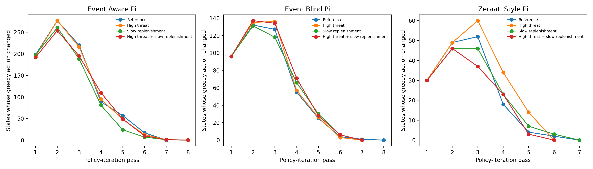
| Scenario | Event-aware passes | Event-blind passes | Zeraati-style event-free passes |
|---|---|---|---|
| Reference | 7 | 8 | 7 |
| High threat | 8 | 7 | 6 |
| Slow replenishment | 8 | 7 | 7 |
| High threat + slow replenishment | 8 | 7 | 6 |
Zeraati et al. (2025) do not report the number of policy-iteration passes in the supplied conference abstract, so their convergence speed cannot be compared numerically to this implementation.
07 / Protocol
Simulation and evaluation design
- Every model starts each rollout on patch A, with all patches rich and the latent phase in ordinary FORAGE.
- Rollout policies are epsilon-soft with ε = 0.01 for the three PI agents. Threshold baselines use their fixed decision rules.
- Fixed thresholds were tuned on a separate set of 5 training seeds per scenario, using 900 steps and a 100-step warm-up; the grid runs from 0.05 to 0.80 in 0.05 increments.
- The MVT-inspired threshold uses the Zeraati-style event-free model's estimated average reward rate, clipped to [0.05, 0.80]. It is an adapted heuristic rather than a faithful implementation of the theorem's assumptions.
- Means and approximate normal 95% confidence intervals (mean ± 1.96 × SE) are reported. Paired differences use matching seed indices across policies.
- The same base random seed design is used across policies, but model paths diverge; “paired” means the seed IDs are matched, not that the exact stochastic events are identical at each step.
08 / Results
Reward-rate outcomes across four ecological regimes
The primary outcome is mean accumulated reward divided by elapsed action time during the post-warm-up part of each rollout. Reward includes a unit food reward when successful, minus a fixed threat-related cost during threat phases and a smaller cost during recovery phases. Hence reward rate can be negative for a policy that repeatedly incurs risk costs while collecting insufficient food.
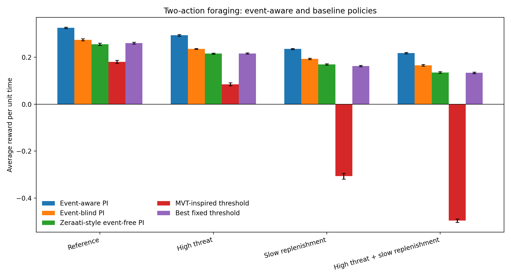
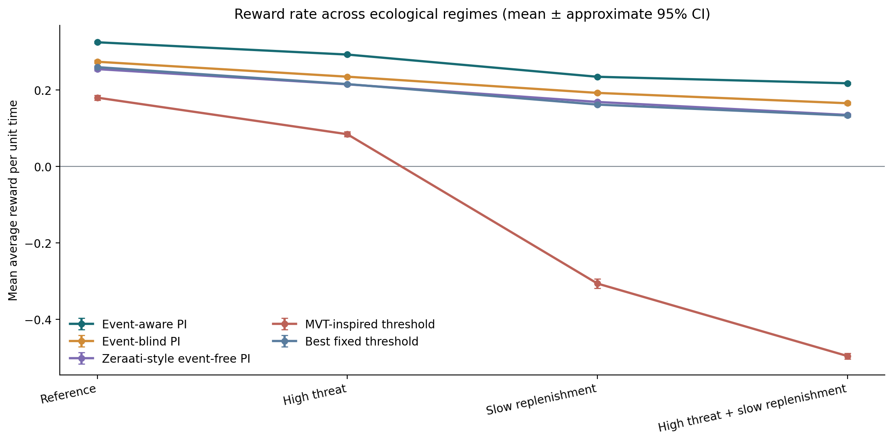
Table 1. Reward rates and rollout diagnostics
| Scenario | Model | Mean reward rate | Approx. 95% CI | SD across seeds | Food / 100 actions | Leave fraction | PI passes |
|---|---|---|---|---|---|---|---|
| Reference | Event-aware PI | 0.3250 | [0.3221, 0.3280] | 0.0068 | 36.20 | 0.377 | 7 |
| Reference | Event-blind PI | 0.2741 | [0.2697, 0.2785] | 0.0100 | 38.39 | 0.398 | 8 |
| Reference | Zeraati-style event-free PI | 0.2548 | [0.2501, 0.2596] | 0.0108 | 38.72 | 0.438 | 7 |
| Reference | MVT-inspired threshold | 0.1802 | [0.1736, 0.1867] | 0.0150 | 38.27 | 0.232 | — |
| Reference | Best fixed threshold | 0.2600 | [0.2562, 0.2637] | 0.0086 | 36.92 | 0.554 | — |
| High threat | Event-aware PI | 0.2929 | [0.2898, 0.2960] | 0.0071 | 33.54 | 0.436 | 8 |
| High threat | Event-blind PI | 0.2350 | [0.2333, 0.2368] | 0.0040 | 33.99 | 0.559 | 7 |
| High threat | Zeraati-style event-free PI | 0.2150 | [0.2125, 0.2175] | 0.0057 | 36.86 | 0.550 | 6 |
| High threat | MVT-inspired threshold | 0.0845 | [0.0779, 0.0910] | 0.0149 | 38.05 | 0.229 | — |
| High threat | Best fixed threshold | 0.2156 | [0.2131, 0.2181] | 0.0057 | 36.91 | 0.551 | — |
| Slow replenishment | Event-aware PI | 0.2348 | [0.2320, 0.2376] | 0.0064 | 25.94 | 0.329 | 8 |
| Slow replenishment | Event-blind PI | 0.1926 | [0.1896, 0.1956] | 0.0069 | 26.26 | 0.550 | 7 |
| Slow replenishment | Zeraati-style event-free PI | 0.1689 | [0.1659, 0.1720] | 0.0069 | 26.83 | 0.569 | 7 |
| Slow replenishment | MVT-inspired threshold | -0.3062 | [-0.3186, -0.2939] | 0.0281 | 17.99 | 0.000 | — |
| Slow replenishment | Best fixed threshold | 0.1620 | [0.1589, 0.1650] | 0.0070 | 23.34 | 0.716 | — |
| High threat + slow replenishment | Event-aware PI | 0.2177 | [0.2147, 0.2207] | 0.0068 | 24.98 | 0.410 | 8 |
| High threat + slow replenishment | Event-blind PI | 0.1655 | [0.1620, 0.1691] | 0.0081 | 25.21 | 0.583 | 7 |
| High threat + slow replenishment | Zeraati-style event-free PI | 0.1349 | [0.1315, 0.1383] | 0.0078 | 23.51 | 0.711 | 6 |
| High threat + slow replenishment | MVT-inspired threshold | -0.4959 | [-0.5034, -0.4884] | 0.0171 | 12.69 | 0.000 | — |
| High threat + slow replenishment | Best fixed threshold | 0.1334 | [0.1300, 0.1368] | 0.0077 | 23.47 | 0.713 | — |
The confidence intervals describe between-seed variation under the specified simulator; they do not include uncertainty about the model assumptions, phase penalties, aggregation prior, or parameter selection.
Event-aware advantage over comparison policies
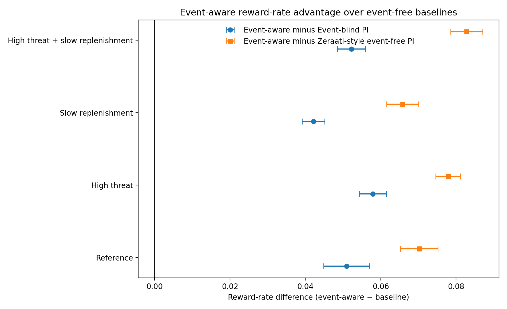
Table 2. Paired reward-rate differences
| Scenario | Baseline | Event-aware − baseline | Approx. 95% CI | SD paired difference | Paired seeds |
|---|---|---|---|---|---|
| Reference | Event-blind PI | +0.0509 | [+0.0449, +0.0570] | 0.0139 | 20 |
| Reference | Zeraati-style event-free PI | +0.0702 | [+0.0652, +0.0752] | 0.0114 | 20 |
| Reference | MVT-inspired threshold | +0.1449 | [+0.1374, +0.1523] | 0.0170 | 20 |
| Reference | Best fixed threshold | +0.0651 | [+0.0601, +0.0700] | 0.0113 | 20 |
| High threat | Event-blind PI | +0.0579 | [+0.0543, +0.0615] | 0.0083 | 20 |
| High threat | Zeraati-style event-free PI | +0.0779 | [+0.0746, +0.0811] | 0.0074 | 20 |
| High threat | MVT-inspired threshold | +0.2084 | [+0.2009, +0.2160] | 0.0171 | 20 |
| High threat | Best fixed threshold | +0.0773 | [+0.0736, +0.0810] | 0.0085 | 20 |
| Slow replenishment | Event-blind PI | +0.0422 | [+0.0391, +0.0452] | 0.0069 | 20 |
| Slow replenishment | Zeraati-style event-free PI | +0.0658 | [+0.0616, +0.0701] | 0.0097 | 20 |
| Slow replenishment | MVT-inspired threshold | +0.5410 | [+0.5286, +0.5534] | 0.0283 | 20 |
| Slow replenishment | Best fixed threshold | +0.0728 | [+0.0687, +0.0769] | 0.0094 | 20 |
| High threat + slow replenishment | Event-blind PI | +0.0522 | [+0.0485, +0.0559] | 0.0084 | 20 |
| High threat + slow replenishment | Zeraati-style event-free PI | +0.0828 | [+0.0786, +0.0870] | 0.0097 | 20 |
| High threat + slow replenishment | MVT-inspired threshold | +0.7136 | [+0.7051, +0.7221] | 0.0193 | 20 |
| High threat + slow replenishment | Best fixed threshold | +0.0843 | [+0.0800, +0.0886] | 0.0099 | 20 |
What the numerical pattern says
- Event-aware vs event-blind: advantage ranges from +0.0422 to +0.0579 reward units per unit time; all reported approximate intervals are above zero.
- Event-aware vs event-free PI: advantage ranges from +0.0658 to +0.0828; this contrast removes even the transient onset cue.
- Challenge conditions: all models lose reward rate when threat increases and/or replenishment slows, but event-aware PI remains highest in these four pre-specified cells.
- Threshold baselines: the MVT-inspired implementation performs poorly in slow-replenishment settings. Because it uses a threshold derived from the adapted event-free model and the present threat-cost task, it should not be interpreted as evidence against the classical MVT in the settings for which its assumptions apply.
09 / Behavioral diagnostics
Policies differ in when they leave, not in what actions are possible
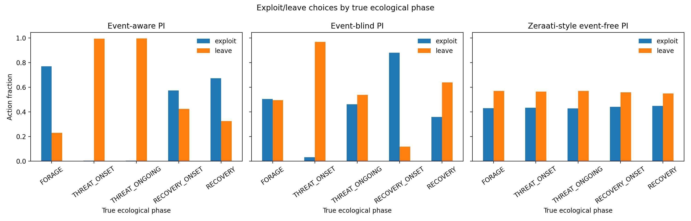
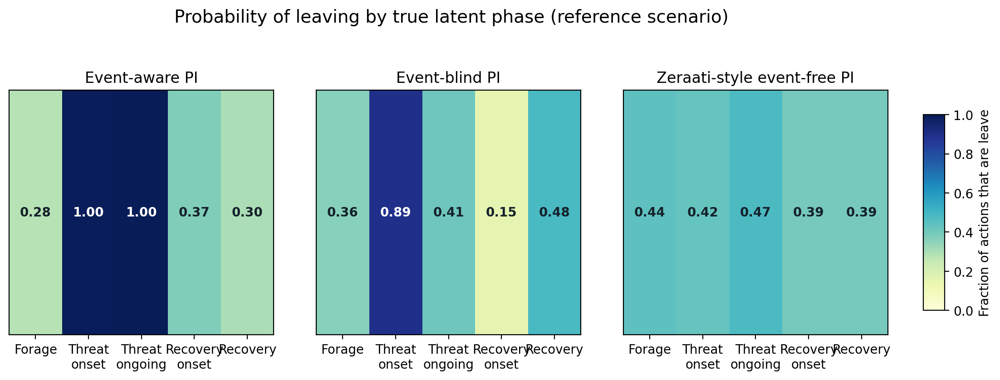
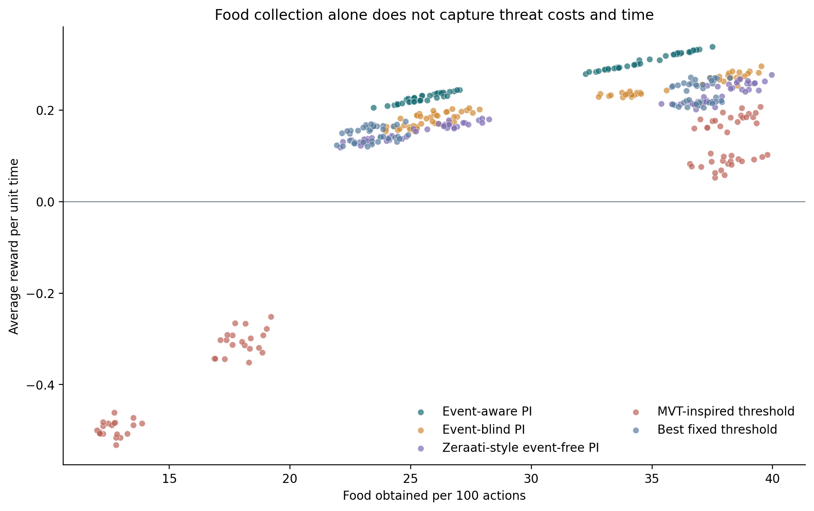
Threshold tuning
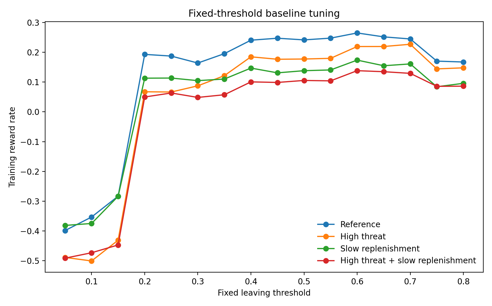
| Scenario | Selected fixed threshold | Mean reward rate at selected threshold (training) |
|---|---|---|
| High threat | 0.70 | 0.227 |
| High threat + slow replenishment | 0.60 | 0.138 |
| Reference | 0.60 | 0.265 |
| Slow replenishment | 0.60 | 0.174 |
10 / Limits and next experiments
What the current results do—and do not—establish
The event-aware agent receives the true persistent phase label. No noisy detector, representation learning, or event-boundary learning is implemented.
Event-blind/event-free models mix latent phase with a prior under neutral 50:50 actions. Their observation processes may be non-Markov, and the priors are not policy-conditioned.
The baseline borrows the event-free patch-state concept and two-action average-reward planning, but uses a different resource discretization and adds threat/recovery dynamics and risk costs.
Threat penalties (−0.85 in threat phases; −0.06 in recovery phases) are design parameters, not fitted to animal behavior.
Leaving always moves A→B→C→A. The agent does not choose which patch to visit, unlike many richer foraging tasks.
All MDP transitions and rewards are specified. This is a tabular planning benchmark, not a learned world model or neural RL architecture.
Twenty seeds and approximate normal intervals are useful for a pilot. Stronger claims require larger runs, paired tests, correction for multiple comparisons, and sensitivity analysis.
The “MVT-inspired” rule is not the original theorem evaluated under its canonical assumptions. Negative rewards in some cells arise from this task's chosen cost and threshold mechanism.
Priority experiments to strengthen the claim
- History-sensitive event-free baseline. Same observation stream; allow a recurrent, finite-history, or Bayesian belief-state controller to infer ongoing threat phase without receiving an event label.
- Noisy event detector. Vary boundary cue detection probability and false alarm rate to quantify how much reliability is required for benefit.
- Matched information ablation. Give each model the same raw cues and action/time budgets; vary only whether the controller has an explicit persistent event-state variable.
- Threat and replenishment grid. Sweep hazard × replenishment × penalty magnitude, report interactions and the regime in which event awareness helps.
- Policy generalization. Optimize in some ecological regimes and evaluate in held-out rates, resource values, and phase-transition dynamics.
- Model uncertainty. Replace known transition probabilities with learned/uncertain dynamics and compare the value of event cues under planning error.
- Behavioral predictions. Identify distinct patch residence times and leave hazards around event boundaries as testable animal/human predictions.
In this fully specified, tabular simulation, a policy optimized with an explicit persistent ecological-phase state earned a higher mean reward rate than three event-free/event-limited model or threshold baselines across four tested scenarios. Establishing that event perception itself causes the advantage requires fairer information-matched controls in which event inference is not supplied as an oracle label.
11 / Reproducibility
Run it, inspect it, change it
Cell-based experiment with model construction, simulation, metrics and plots.
Open notebook ↗Python sourceStandalone implementation of the MDPs, policy iteration, rollouts and report generation.
View source ↗Results bundleCSV outputs, figures, configuration, convergence history and example traces.
Download results ↗Baseline paperSource conference abstract used to guide the event-free foraging baseline.
Open source paper ↗Reproduce locally
# Python 3.10+ recommended
pip install -r requirements.txt
python code/event_aware_two_action_foraging.py --output-dir results --seeds 20 --horizon 3000 --warmup 200 --quietThe Python implementation uses NumPy, pandas and Matplotlib. The code writes CSV summaries, policy-iteration histories, threshold-tuning results, phase-conditional action counts, example trajectories, figures and a report to the selected output directory. The default run is deliberately moderate; increase seeds and horizon for more stable evaluation.
Data dictionary
| File | What it contains |
|---|---|
summary_metrics.csv | Mean reward-rate outcomes, SD, approximate confidence intervals, action fractions and PI iterations per model × scenario. |
metrics_by_seed.csv | Per-seed reward rate, total reward/time, food per 100 actions, leave/exploit fractions, thresholds and convergence details. |
paired_model_comparisons.csv | Event-aware minus each baseline, paired difference SD, approximate confidence interval and seed count. |
policy_iteration_history.csv | Per iteration and scenario: average-reward estimate and number of changed greedy states. |
action_fractions_by_phase.csv | Per-seed exploit/leave counts and fractions conditional on latent true phase. |
threshold_tuning.csv | Training reward rate for each threshold grid value in each scenario. |
scenario_phase_priors.csv | Stationary latent-phase mixture weights used by aggregated event-blind/event-free models. |
run_config.json | Seed, horizon, warm-up, scenario hazard and replenishment parameters, and solver settings. |
12 / References
Literature and source material
- Zeraati, R., Oña Jodar, T., Safavi, S., Cruz, B., Poo, C., & Dayan, P. (2025). Optimal Foraging by Learning the World Model. Conference on Cognitive Computational Neuroscience (CCN 2025) abstract. PDF. Primary source for the average-reward patch-foraging baseline and policy-iteration setup discussed here.
- Stephens, D. W., & Krebs, J. R. (1986). Foraging Theory. Princeton University Press. https://doi.org/10.2307/j.ctvs32s6b.
- Mahadevan, S. (1996). Average reward reinforcement learning: Foundations, algorithms, and empirical results. Machine Learning, 22, 159–195. https://doi.org/10.1007/BF00114727.
- Zacks, J. M., Speer, N. K., Swallow, K. M., Braver, T. S., & Reynolds, J. R. (2007). Event perception: A mind–brain perspective. Psychological Bulletin, 133(2), 273–293. https://doi.org/10.1037/0033-2909.133.2.273.
- Zacks, J. M., & Swallow, K. M. (2007). Event segmentation. Current Directions in Psychological Science, 16(2), 80–84. https://doi.org/10.1111/j.1467-8721.2007.00480.x.
- Kendall, R. K., & Wikenheiser, A. M. (2022). Quitting while you're ahead: Patch foraging and temporal cognition. Behavioral Neuroscience, 136(5), 467–478. https://doi.org/10.1037/bne0000526.
- Sutton, R. S., & Barto, A. G. (2018). Reinforcement Learning: An Introduction (2nd ed.). MIT Press. Book page.
References provide theoretical context. The simulation results on this site come from the included code and configuration, not from those papers. The source paper is linked so readers can distinguish its original model from this adaptation.